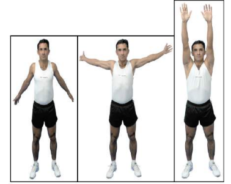
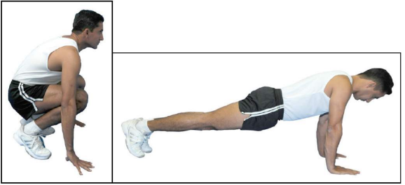
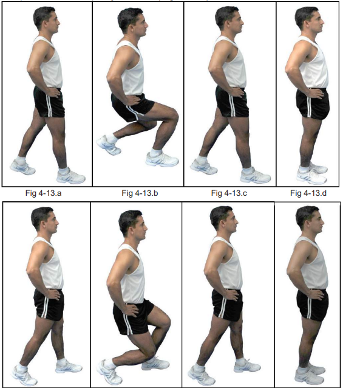
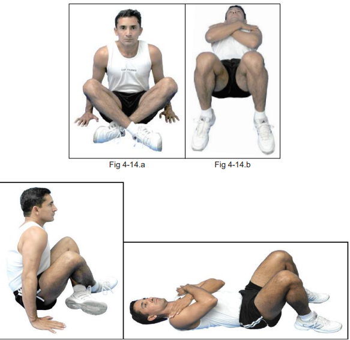
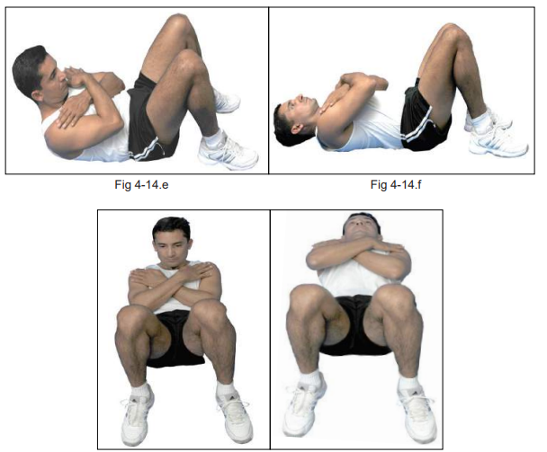
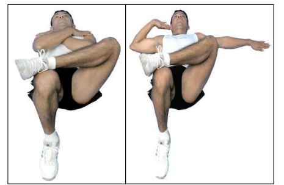
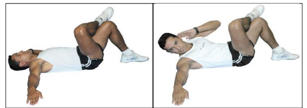
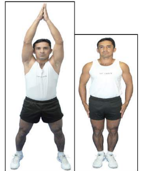

a) Posição inicial: afastamento lateral das pernas, braços caídos ao lado do corpo. A tomada da posição é feita em dois tempos: no primeiro, braços na horizontal ao lado do corpo e afastamento lateral das pernas, por salto; no segundo, braços caídos ao longo do corpo
Execução: em quatro tempos. A contagem é feita toda vez que os braços passarem junto às pernas. Os braços deverão passar o mais próximo possível das orelhas, de acordo com a amplitude articular individual. O exercício é decomposto em dois movimentos distintos: inicialmente é realizada a circundução para frente. Ao término da circundução para frente pela tropa, o guia inicia o exercício de circundução dos braços para trás, com contagem semelhante ao primeiro movimento

a) Posição inicial: apoio de frente no solo. A tomada de posição é feita em dois tempos. No primeiro, grupar o corpo, unindo as pernas simultaneamente, apoiando as mãos no solo e, no segundo, estender as pernas para trás, deixando o corpo em posição horizontal sobre três apoios no solo (braços esquerdo, direito e ponta dos pés).
Obs:1) Guia comanda “ABAIXO-ACIMA!”; 2) Tropa executa o movimento e, em cima, responde “UM!”; 3) Guia comanda “ABAIXO-ACIMA!”; e 4) Tropa executa o movimento e responde “DOIS!”; e assim sucessivamente até a oitava repetição.

a) Posição inicial: afastamento lateral das pernas, mãos espalmadas nos quadris. A tomada da posição é feita em dois tempos: no primeiro, grupar o corpo e, no segundo, por salto, ficar em pé com as pernas afastadas e as mãos nos quadris.

a) Posição inicial: decúbito dorsal com as pernas flexionadas, braços cruzados sobre o peito e com as mãos nos ombros opostos. A tomada de posição é feita em dois tempos: na primeira, por salto, sentar com as pernas cruzadas e, no segundo, abaixar o tronco.
1) tempo 1: flexionar o tronco até retirar as escápulas do solo; 2) tempo 2: voltar à posição inicial; 3) tempo 3: idêntico ao tempo 1; e 4) tempo 4: voltar à posição inicial.


a) Posição inicial: decúbito dorsal com as pernas flexionadas, a esquerda cruzada sobre a direita, o braço esquerdo estendido lateralmente e o direito flexionado, com a mão sobre a orelha. Tomada de posição em dois tempos. No primeiro, cruzar a perna esquerda sobre a direita e, no segundo, ao mesmo tempo em que o braço esquerdo é estendido lateralmente formando um ângulo aproximado de 90º em relação ao troco, flexionar o cotovelo direito, colocando a mão direita sobre a orelha


a) Posição inicial: posição de sentido. A tomada da posição é feita em dois tempos: no primeiro, elevar o tronco, flexionar as pernas e apoiar as mãos no solo, e, no segundo, por salto, ficar de pé na posição de sentido
b) Execução: abrir por salto as pernas, ao mesmo tempo bater palmas acima da cabeça, retornando em seguida à posição inicial
Obs: Ao término do 1ª execução, o guia comandará “ZERO!” e a tropa prosseguirá contando, acompanhando o guia, até 30
